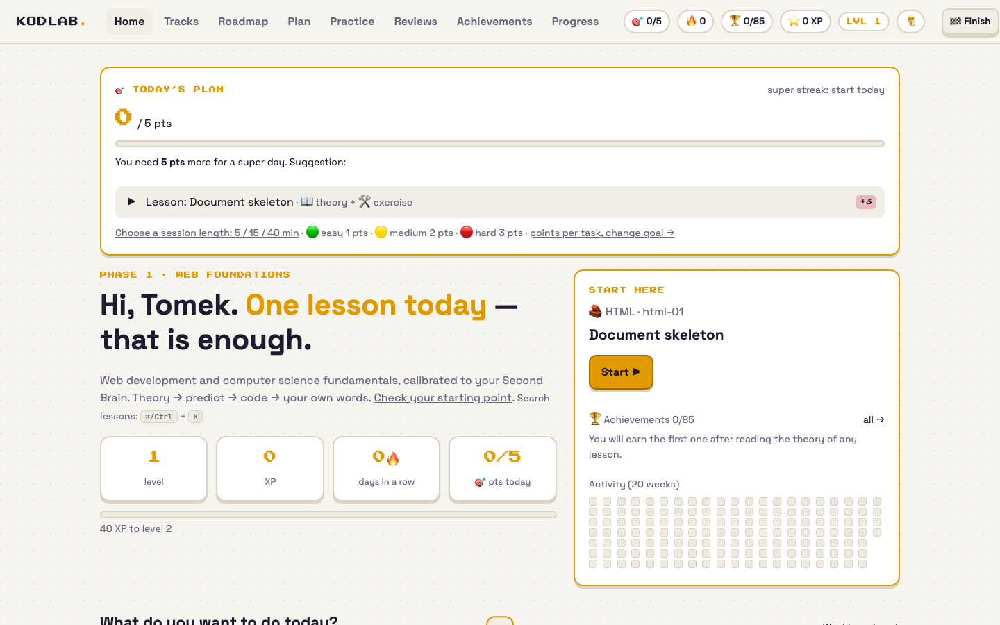
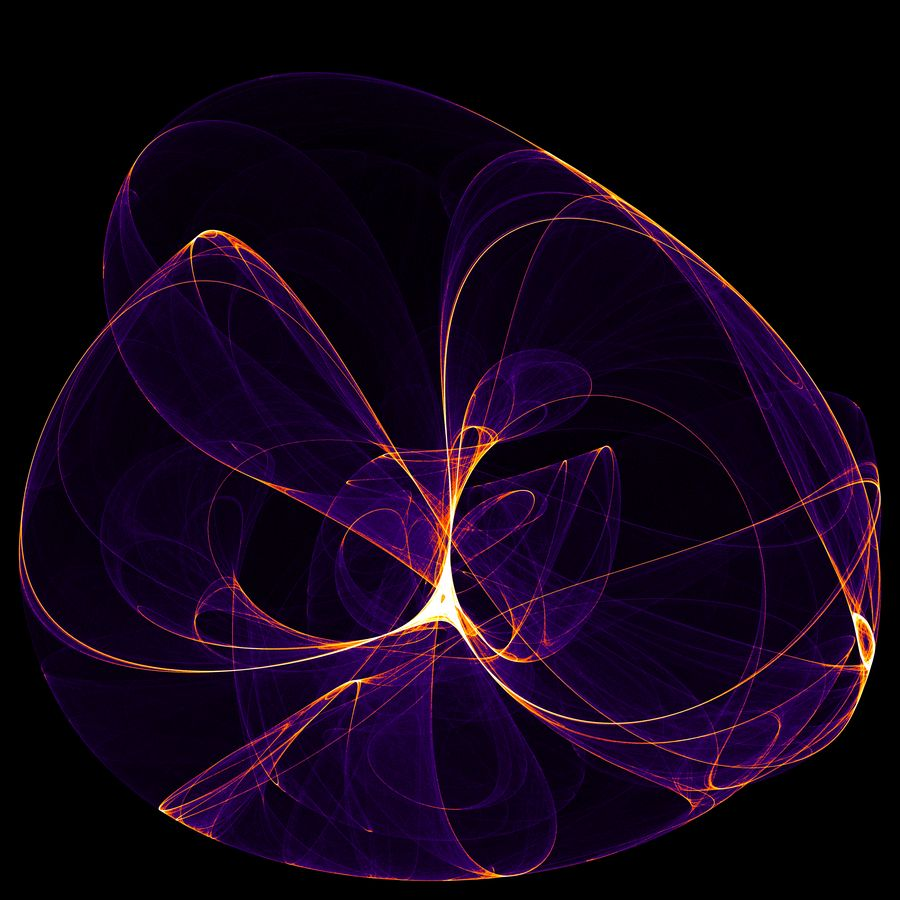
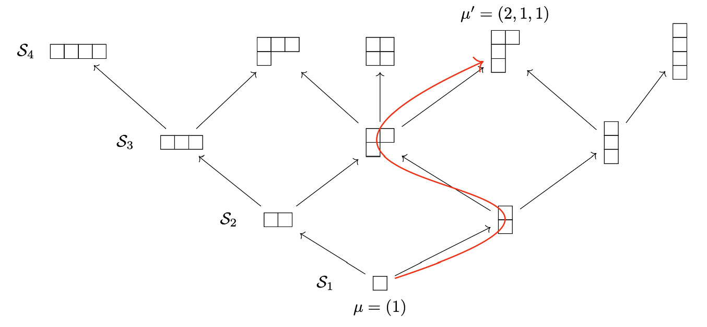

I spent five years in quantum-information research at the University of Gdańsk, learning to turn
abstract questions into results that anyone can reproduce. Along the way I wrote tools in Python
and MATLAB, solved a lot of semidefinite programs and presented my work in Seoul and Kyoto.
Today I lead the software team at EmbeddedSystems.do,
where we build environmental and IoT monitoring products: data pipelines, dashboards, cloud services
and automation. I like making complex systems genuinely useful, and I always leave a little room for curiosity.
A mix of production work, open source, learning projects and generative art.
Most of it lives on GitHub.
TM / VIDEO LIBRARYPICK A TAPE TO EXPLORE ↘
NOW PLAYING / PROJECT ARCHIVENO SIGNAL / SELECT A TAPE
Open source · In development
BENTOS: a water-quality buoy for the Gulf of Gdańsk
A system in development that brings in-situ sensors, satellite data and predictive modelling
together in a public water-quality platform for the Gulf of Gdańsk.
I build the software side: data pipelines and dashboards.
A personal learning lab for web development and computer science: a roadmap, browser-based coding exercises, tests and practice designed to build independence.
Built with HTML, CSS and JavaScript, with an in-browser editor and progress tracking. Available in Polish and English.

Kodlab · a fresh learning dashboard
Personal project · Private repository
Agent Control
A self-hosted dashboard for managing coding tasks with AI agents: queue work, follow live activity and review changes before deciding what to keep.
Built with React, TypeScript, Fastify and SQLite. Tasks run in isolated Git worktrees, with a review workflow and human approval.

Generative art · Python
Strange attractors & fractals
Chaotic maps sped up with Numba, rendered as density histograms in custom neon colormaps and
animated into 1080p60 videos. The background at the top of this page runs the same maths live in your browser.
An MCP server that lets AI assistants analyse cold-chain sensor data locally, finding threshold
breaches and anomalies and splitting journeys into segments. Published on PyPI.
Cleans up Polish bank CSV exports (odd encodings, 1 234,56 zł), sorts
transactions into categories with JSON rules and charts spending in a CLI and a Streamlit app.
S3 → Lambda → Glue → Athena → Metabase, all scripted with boto3, followed by a
gradient-boosting model, PCA/t-SNE/HDBSCAN analysis and a careful look at feature leakage.
Web Audio · Canvas
Pendulum Wave Chimes
A small browser toy in a single file. A pendulum-wave simulation plays a bell synthesiser and
a chord pad under a starry canvas: polyrhythm you can watch.
3D gravity in C++20 with a symplectic leapfrog integrator, an orbital camera and energy
tracking to keep the numerics honest. Next stop: molecular dynamics.
Browser demos made for Centrum Nauki Experyment and public events: a quantum lab
(double slit, photoelectric effect, Planck's constant from LEDs, BB84 key exchange)
and a genetic algorithm that tackles the travelling-salesman problem.

Research code · MATLAB / Sage
Tools from my PhD
An SDP-based test for the decomposability of positive maps, and a generator of the
Young–Yamanouchi basis for Schur–Weyl decompositions. Both are building blocks for studying
entanglement, teleportation and symmetric quantum channels.
What's happening beneath the surface? We're building the tools to find out.
BENTOS brings together in-situ water-quality sensors, satellite observations and predictive
modelling to help people understand the Gulf of Gdańsk, from everyday conditions to risks
such as cyanobacteria blooms.
Whatever the final sensors measure, the software meets the same shape: a numbered, timestamped
sample, and a handful of readings that each have a unit and a plausible range. The buoy is still
in development, so this panel is a simulation: values wander through typical Baltic ranges.
It is not buoy data.
Simulated · sensor prototype
TEMP8.38°C
SAL7.23PSU
O₂9.19mg/L
CHL-a2.65µg/L
pH8.14
TURB2.75NTU
SAMPLE #1058Simulated values
The data journey
From a reading to a clearer picture
The sensor feed above is simulated; the buoy-to-dashboard flow is planned. The dashboard demo already explores satellite and model layers.
In plain language / Can extra copies of an unknown quantum state help transmit it when the receiver cannot make corrections? This work finds the best possible chance of success.
F. Grosshans, M. Horodecki, M. Murao, T. Młynik, M. T. Quintino, M. Studziński, S. Yoshida · Quantum 10, 2105 · DOI · arXiv
Joined as a software engineer and data analyst, and have led the software team since 10/2026.
I build Python and React web applications on AWS, along with data pipelines, dashboards and cloud
tooling for IoT and environmental monitoring (BENTOS, cold-chain products).
08/2025 – 04/2026
Junior specialist, events & scientific programmes · Centrum Nauki Experyment
Gdynia, Poland
Partnerships with universities and student organisations, science events across Poland and Europe,
and procurement. I also used Python and scikit-learn to streamline internal processes.
2019 – 2024
PhD, Physics · University of Gdańsk
Thesis: k-positive maps in physics
Positive maps and k-entanglement witnesses; higher-order transformations of unitary operations,
port-based teleportation, symmetry-reduction methods. Talks at AQIS 2023 (Seoul) and YITP 2023 (Kyoto).
Principal investigator of two small grants (UGrants-start 2 and an academic-exchange grant); team member of NCN Sonata 16.
Taught algebra, stochastic processes, functional analysis and Python with algorithms.
2016 – 2018
Administrative assistant · Translation agency
Gdynia, Poland
Data-quality checks on client documents, Excel pipelines for translation workflows, invoicing.
2015 – 2016
Physics & robotics lecturer · Roboty i Spółka
Gdańsk, Poland
Taught robotics with LEGO Mindstorms EV3 and the basics of programming.
2012 – 2019
BSc & MSc, Physics · University of Gdańsk
Theses: Study of the galaxy's rotation curve · k-positive indecomposable maps on matrix algebras
Exploratory data analysis and Monte Carlo simulations on satellite data of stars; first steps into
semidefinite programming and quantum information.
Contact
Let's build something useful together.
Want to collaborate, have an open-source idea or a question about BENTOS, or simply fancy a chat
about data and software? I'd love to hear from you. I'm based in Gdańsk, Poland.